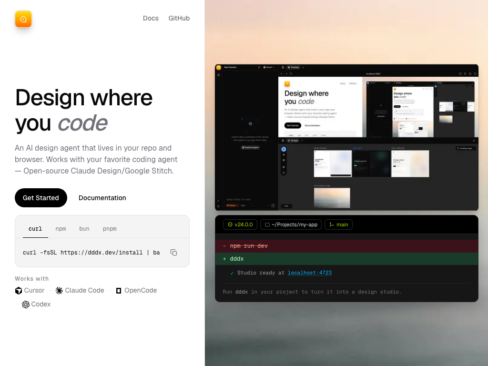

<template id="scene-tablet-template">
  <div data-composition-id="scene-tablet" data-width="1920" data-height="1080">
    <div class="scene-content">
      <div class="bg-glow"></div>
      <div class="accent-line"></div>

      <div class="url-chip">dddx.dev</div>

      <div class="tablet-stage">
        <div class="tablet-frame">
          <div class="tablet-bezel"></div>
          <div class="tablet-viewport">
            <div class="shot-wrap" data-layout-allow-overflow>
              
            </div>
          </div>
        </div>
      </div>

      <div class="kicker-wrap">
        <p class="kicker">Local-first · browser-native</p>
      </div>
    </div>

    <style>
      [data-composition-id="scene-tablet"] {
        width: 1920px;
        height: 1080px;
        background-color: #0a0c12;
        position: relative;
        overflow: hidden;
        font-family: "Inter", sans-serif;
        color: #f5f7fa;
      }

      [data-composition-id="scene-tablet"] .scene-content {
        width: 100%;
        height: 100%;
        padding: 72px 120px 96px;
        box-sizing: border-box;
        display: flex;
        flex-direction: column;
        align-items: center;
        justify-content: center;
        gap: 32px;
        position: relative;
      }

      [data-composition-id="scene-tablet"] .bg-glow {
        position: absolute;
        width: 640px;
        height: 640px;
        border-radius: 50%;
        background: rgba(108, 243, 192, 0.1);
        filter: blur(90px);
        top: 50%;
        left: 50%;
        transform: translate(-50%, -50%);
        pointer-events: none;
      }

      [data-composition-id="scene-tablet"] .accent-line {
        position: absolute;
        left: 120px;
        top: 50%;
        width: 2px;
        height: 280px;
        background-color: rgba(108, 243, 192, 0.35);
        transform: translateY(-50%);
      }

      [data-composition-id="scene-tablet"] .url-chip {
        position: absolute;
        top: 48px;
        left: 120px;
        font-family: "JetBrains Mono", monospace;
        font-size: 18px;
        color: #6cf3c0;
        background: rgba(22, 25, 34, 0.92);
        border: 1px solid rgba(108, 243, 192, 0.35);
        border-radius: 999px;
        padding: 10px 18px;
        opacity: 0;
        z-index: 4;
      }

      [data-composition-id="scene-tablet"] .tablet-stage {
        perspective: 1400px;
        z-index: 2;
      }

      [data-composition-id="scene-tablet"] .tablet-frame {
        width: 860px;
        border-radius: 24px;
        padding: 14px;
        background: #161922;
        border: 1px solid rgba(108, 243, 192, 0.3);
        box-shadow: 0 40px 90px rgba(0, 0, 0, 0.5);
        transform: rotateY(-8deg);
        transform-style: preserve-3d;
      }

      [data-composition-id="scene-tablet"] .tablet-bezel {
        height: 8px;
        width: 80px;
        margin: 0 auto 12px;
        border-radius: 999px;
        background: rgba(139, 147, 167, 0.35);
      }

      [data-composition-id="scene-tablet"] .tablet-viewport {
        height: 560px;
        border-radius: 14px;
        overflow: hidden;
        background: #ffffff;
      }

      [data-composition-id="scene-tablet"] .shot-wrap {
        width: 100%;
        height: 100%;
        overflow: hidden;
      }

      [data-composition-id="scene-tablet"] .shot-wrap img {
        width: 100%;
        height: 100%;
        object-fit: cover;
        object-position: top center;
        display: block;
      }

      [data-composition-id="scene-tablet"] .kicker-wrap {
        width: 100%;
        max-width: 980px;
        z-index: 3;
      }

      [data-composition-id="scene-tablet"] .kicker {
        font-family: "Inter", sans-serif;
        font-size: 64px;
        font-weight: 600;
        letter-spacing: -0.03em;
        margin: 0;
        opacity: 0;
      }
    </style>

    <script src="https://cdn.jsdelivr.net/npm/gsap@3.14.2/dist/gsap.min.js"></script>
    <script>
      window.__timelines = window.__timelines || {};
      const BEAT = 5;
      const tl = gsap.timeline({ paused: true });

      tl.fromTo(
        ".tablet-frame",
        { y: 48, opacity: 0, rotateY: -16, rotateX: 6 },
        { y: 0, opacity: 1, rotateY: -8, rotateX: 0, duration: 0.85, ease: "power4.out" },
        0.2,
      );

      tl.fromTo(
        ".shot-wrap",
        { scale: 1.05, x: 0 },
        { scale: 1, duration: 0.65, ease: "expo.out" },
        0.35,
      );

      tl.to(".shot-wrap", { x: -24, duration: 1.6, ease: "none" }, 1.0);

      tl.fromTo(
        ".url-chip",
        { x: -16, opacity: 0 },
        { x: 0, opacity: 1, duration: 0.5, ease: "back.out(1.4)" },
        0.9,
      );

      tl.fromTo(
        ".accent-line",
        { scaleY: 0, opacity: 0 },
        { scaleY: 1, opacity: 1, duration: 0.7, ease: "power2.out", transformOrigin: "top center" },
        0.45,
      );

      tl.fromTo(
        ".bg-glow",
        { scale: 0.85 },
        { scale: 1.12, duration: 2.8, ease: "sine.inOut", yoyo: true, repeat: 1 },
        0.15,
      );

      tl.fromTo(
        ".kicker",
        { y: 28, opacity: 0 },
        { y: 0, opacity: 1, duration: 0.7, ease: "expo.out" },
        3.5,
      );

      window.__timelines["scene-tablet"] = tl;
    </script>
  </div>
</template>
